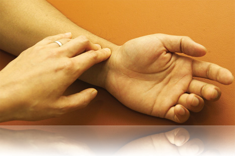
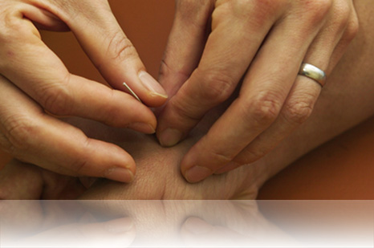
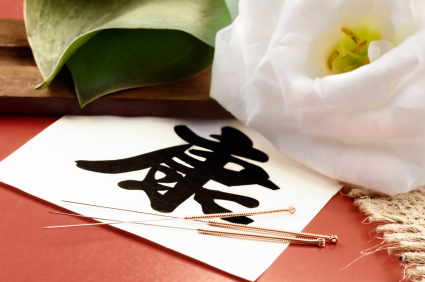
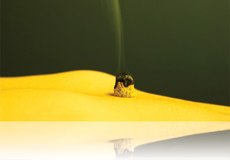

SCHOLARS WAY HEALING CENTER IS A PLACE TO HEAL, NOURISH, BALANCE
THE BODY AND MIND. DEDICATED TO HEAL THE WHOLE BEING.
AT SCHOLARS WAY HEALING CENTER, WE BELIEVE THAT GOOD HEALTH CARE
SHOULD BE SUPPORTIVE OF PHYSICAL AND EMOTIONAL WELL-BEING, AND
SHOULD INCLUDE DIET AND LIFESTYLE COUNSELING.
AT SCHOLARS WAY HEALING CENTER, THE METHODS OF TREATMENT WE USE
INCLUDE ACUPUNCTURE, PUSLE DIAGNOSIS, MOXIBUSTION, HERBAL TONICS,
QIGONG AND HEALTH CONSULTATION.
WITH A PERSONALLY TAILORED TREATMENT PLAN, WE STRIVE TO HEAL, FAST
RECOVERY, STRENGTHEN AND WELL BEING OF ALL OUR PATIENTS.
MAHALO
Both, Jonah Chin (L.Ac.) and JungHyun (Lina) Kim are licensed
acupuncturist in Honolulu Hawaii. They have practiced acupuncture
in Seattle Washington for 16 years. They’ve received the Diploma
of Doctor of Traditional Chinese Medicine at Oshio College of
Acupuncture and Herbology at Victoria, British Columbia, Canada.
They have devoted over 25 years to learning one of Korea’s oldest
Daoist medicinal lineages. Their studies include Daoist Medicine,
Qigong, Jin Gum (Iaido) and Kendo.
As a dedicated students to the ancient practice of pulse
diagnosis, Jonah and Lina are advancing the application of
acupuncture to treat illness at every level of experience;
physical, mental and emotional.
Treatments

Pulse diagnosis is an art of perception, analysis and calculation.
The information gathered indicates signs and symptoms which fit
into distinct patterns reflecting the internal relationships as
they are understood in oriental medicine.
Therapy is determined on
the basis of a sensitive and complex diagnosis of two primary
features:
- Palpation of both wrist pulses
- A full medical history,
including the patient’s back ground and lifestyle.

Oriental medicine is a thorough and gentle approach to healing.
Each patient brings a unique clinical picture to the practitioner
and receives treatment tailored to his or her specific needs. This
natural form of healing is non-invasive and safe.
Scholars Way
Healing Center uses disposable needles, certified clean needle
techniques and employs professionally licensed acupuncture
practitioners.
Benefits:
- Palpation of both
wrist pulses
- Pain relief
- Reduces stress
- Improves metabolism
- Stimulates the circulation of blood and qi
- Correction of hormonal imbalances
- Promotes total health and
well-being

For many centuries Herbs have been used to cleanse, nurture, tonify and boost the energy stores of the body. They are known to promote everyday good health as well as increase the production of vital hormones which in turn increase the production and flow of Qi. Based on each individuals health needs, herbs are combined in specific proportions, boiled out and packaged in individual packets that can be conveniently heated and consumed at home. Our herbal tonics can be formulated to aid in the treatment of a wide array of ailments including but not limited to:
- low energy levels
- decreased stamina
- diabetes
- high blood pressure
- respiratory problems
- allergies
- stunted growth (in children)

Benefits:
- To warm meridians and expel cold
- To induce the smooth flow of qi and blood
- Rejuvenate the nervous system
- Enhance the immune system
- Keeping the body strong in its resistance to disease
Aches & Pain. (Acute & Chronic) Shoulder and Lower Back Pain After Surgery Trauma
Allergies Anemia Anxiety, Anger Arthritis Asthma Auto Accidents Bell’s palsy
Chronic Fatigue Cold & Flu Constipation Decreased Stamina Depression Detox
Diabetes Digestive disorders Headache High blood pressure Hypertension Insomnia.
Infertility Low back pain Low Energy Neck pain Menopause Menstrual disorders
Migraines Muscle pain Neck pain Respiratory problems Sciatica Seasonal allergies
Skin Problems Sports Related Injuries Stress relief Strokes Weight Loss